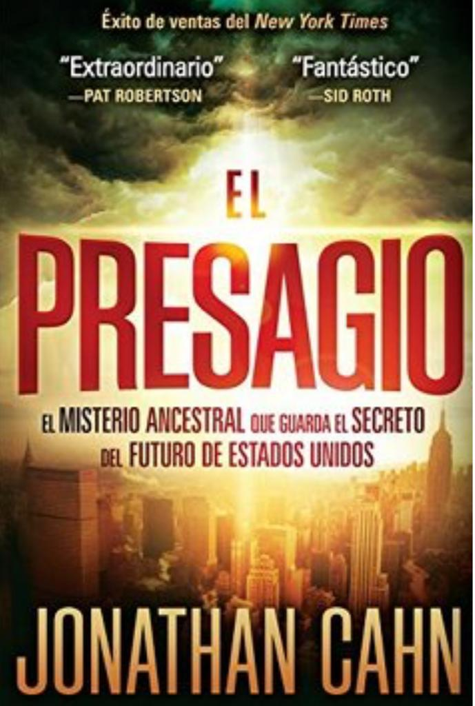

RESEÑA
Es una novela de ficción, donde los principales personajes en la historia son un misterioso profeta y un periodista agobiado por una serie de mensajes que recibe en forma de nueve sellos. Cada uno de ellos va revelando un misterio profético relacionado con el futuro, el cual lo llevará a cambiar para siempre la manera de ver el mundo.
La historia enlaza hechos históricos recientes, con los sucedidos en el Antiguo Testamento. El evento central relacionado con los presagios, es el que ocurrió el 11 de septiembre de 2001, durante el ataque al Centro Mundial de Comercio en la ciudad de Nueva York y el colapso de la economía global que sucedió pocos años después.
A medida que la historia se desarrolla, vamos descubriendo que los presagios o las advertencias y el juicio, están directamente relacionados a una profecía que se encuentra en Isaías 9:10 “Los ladrillos han caído, pero con piedras labradas reedificaremos; los sicómoros han sido cortados, pero con cedros los remplazaremos”.
El autor, basándose en este versículo, conecta las profecías de los últimos tiempos con Israel y con el futuro de los Estados Unidos.
Es una reflexión sobre acontecimientos que afectan a todo el mundo. ¿Son advertencias de Dios? ¿Corremos el riesgo de repetir lo que le sucedió al pueblo de Israel, porque no asimiló el significado de las palabras de Isaías a pesar de que las escucharon una y otra vez?
¡No dejes de leerlo!
Libro Recomendado por Gaby Calles, Líder de dos Hogares de Mujeres, los Lunes y Martes por la tarde.